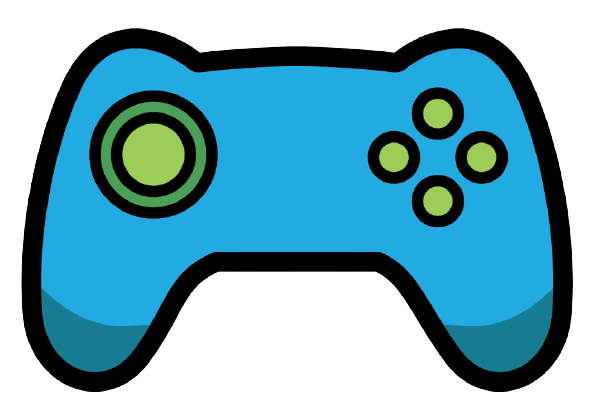
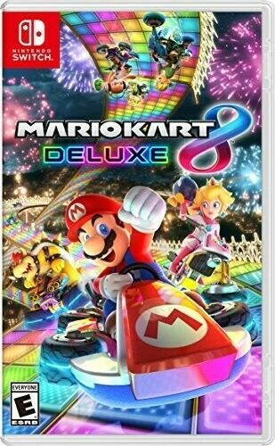
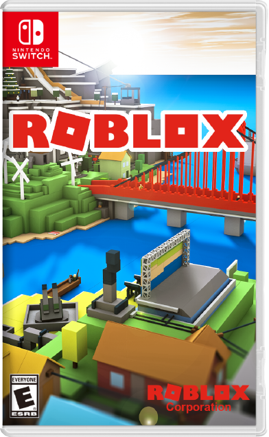
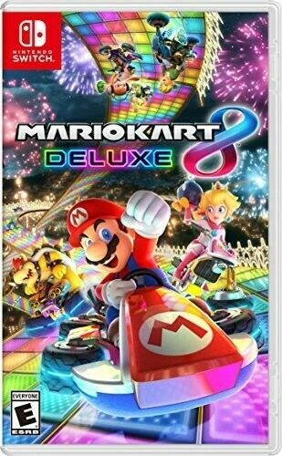
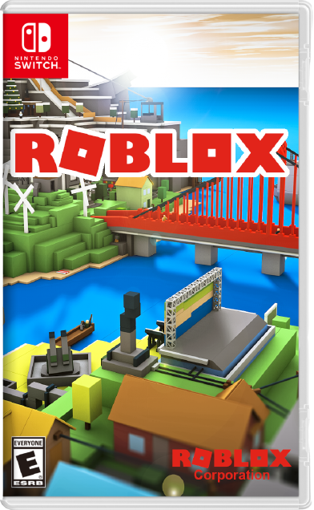

About Me
.jpg)
My name is Ritvik. I'm 11 years old and im in 6th Grade. My favorite color is blue. I love gaming. My favorite food is Chicken Biryani. I take coding, writing and art classes. I look up to Mahathma Gandhi and his followers. My favorite books are Harry Potter, The Hunger Games and The Land of Stories. My favorite video games are Minecraft, Roblox, Mario Kart and Super Smash Bros. My friend is Coolcow. Here are some facts about cows.Cattle is a word for certain mammals that belong to the genus Bos. Cattle may be cows, bulls, oxen, or calves. Cattle are the most common type of large domesticated hoofed animals. They are a prominent modern member of the subfamily Bovinae. Cattle are large grazing animals with two-toed or cloven hooves and a four-chambered stomach. This stomach is an adaptation to help digest tough grasses. Cattle can be horned or polled (or hornless), depending on the breed. The horns come out on either side of the head above the ears and are a simple shape, usually curved upwards but sometimes down. Cattle usually stay together in groups called herds. One male, called a bull will usually have a number of cows in a herd as his harem. The cows usually give birth to one calf a year, though twins are also known to be born. The calves have long strong legs and can walk a few minutes after they are born, so they can follow the herd. Cattle are native to many parts of the world except the Americas, Australia and New Zealand. Cattle have been domesticated for about 9,000 years. They are used for milk, meat, transport, entertainment, and power.
My Favorite Hobby
Gaming
My Favorite Hobby is Gaming. Wether it's with my, friends, myself or with family, I love Gaming. Coming after school, I look foward to get my computer, ipad or Nintendo, sit down and open games like Minecraft, Roblox or Mario. Gaming makes me happy and complete. However, adiction is a problem. That's why playing games for 1 to 2 hours is a healthy gaming career. Not only does gaming make me happy it helps me learn. Although, the stereotype is that video games rot your brain. It is the oppisite. When I open my favorite titles, I always think behind the code. How they move, jump, hit. I always think about the development behind the game. In conclusion, Gaming makes always makes me happy and sharp. No matter what games I play, a smile always strikes my face! :)
My Favorite games

 



My Work
My Inspirations